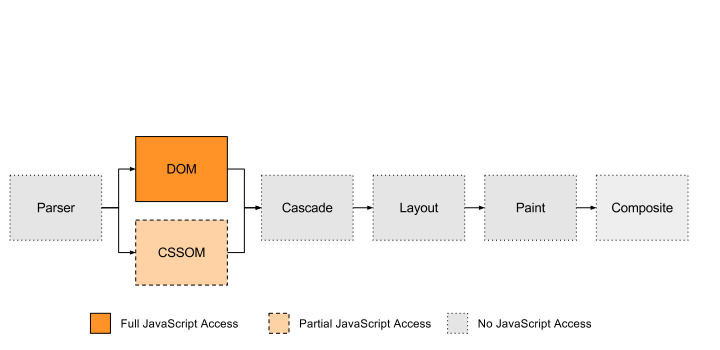
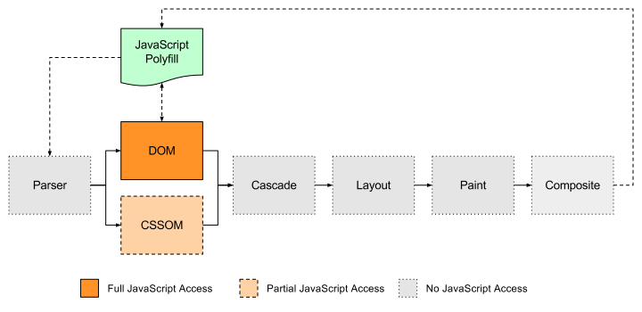

Fundamentally, all CSS polyfills do the same thing.
They turn code the browser doesn't understand into code the browser does understand.
calc(**random** * 100%);
calc(**0.35746** * 100%);
Okay, so we have to update the CSS, but where do we do that?
The CSS Object Model
document.styleSheets
CSSStyleSheetList
CSSStyleSheet
CSSRuleList
CSSStyleRule
CSSStyleDeclaration
for (const stylesheet of document.styleSheets) {
// Flatten nested rules (@media blocks, etc.) into a single array.
const rules = [...stylesheet.rules].reduce((prev, next) => {
return prev.concat(next.cssRules ? [...next.cssRules] : [next]);
}, []);
for (const rule of rules) {
for (const property of Object.keys(rule.style)) {
const value = rule.style[property];
if (value.includes('random')) {
rule.style[property] = value.replace('random', Math.random());
}
}
}
}
View demo →
If the full style text isn't in the CSSOM, where is it?
Nowhere. You have to search for it manually.
Getting all CSS style rules
<style>
<link href="...">
function getPageStyles() {
// Query the document for any element that could have styles.
var styleElements =
[...document.querySelectorAll('style, link[rel="stylesheet"]')];
// Fetch all styles and ensure the results are in document order.
// Resolve with a single string of CSS text.
return Promise.all(styleElements.map((el) => {
if (el.href) {
return fetch(el.href).then((response) => response.text());
} else {
return el.innerHTML;
}
})).then((stylesArray) => stylesArray.join('\n'));
}
View demo →
Now that I have all the page
styles, what do I do next?
You need to parse the styles,
so they can be more easily manipulated.
Okay, can the browser
help me parse the CSS?
#lols
Parsing the raw CSS text
There are many open source parsers that will convert
a string of CSS into an abstract syntax tree.
function replacePageStyles(css) {
// Get a reference to all existing style elements.
const existingStyles =
[...document.querySelectorAll('style, link[rel="stylesheet"]')];
// Create a new <style> tag with all the polyfilled styles.
const polyfillStyles = document.createElement('style');
polyfillStyles.innerHTML = css;
document.head.appendChild(polyfillStyles);
// Remove the old styles once the new styles have been added.
existingStyles.forEach((el) => el.parentElement.removeChild(el));
};
Putting the polyfill together
import postcss from 'postcss';
import getPageStyles from './get-page-styles';
import randomKeyworkPlugins from './random-keyword-plugin';
import replacePageStyles from './replace-page-styles';
getPageStyles()
.then((css) => postcss([randomKeywordPlugin]).process(css))
.then((result) => replacePageStyles(result.css));
View demo →
How can we update the polyfill to target individual elements?
Option #1
Add inline styles to every element matching the rule selector
// ...
rule.walkDecls((decl, i) => {
if (decl.value.includes('random')) {
const elements = **document.querySelectorAll(rule.selector);**
for (const element of elements) {
**element.style[decl.prop]** =
decl.value.replace('random', Math.random());
}
}
});
// ...
View demo →
Option #2
Check the rest of the CSS for matching rules and then apply the final, merged set of properties as inline style on each matching element.Of course, we also have to account for specificity, so we've gotta manually parse each selector to calculate that. Then we can sort the matching rules in specificity order from low to high.Oh and then there's @media rules, which we'll have to manually check for matches.And speaking of at-rules, there's also @supports—can't forget about that.And lastly we'll have to account for property inheritance, so for each element we'll have to traverse up the DOM tree and inspect all its ancestors to get the full set of computed properties.Oh, and one more thing: we'll also have to account for !important declarations, which are calculated per-declaration instead of per-rule, so we'll have to maintain a separate mapping for those to figure out which declaration will ultimately win.
Wait, didn't you just describe the cascade?
Option #3
Rewrite the CSS to target individual elements
while maintaining specificity order.
// ...
// Clone the current rule and update the selector.
rule.parent.insertBefore(rule, rule.clone({
selector: appendToSelectors(rule.selector, **':not(.z)'**)
}))
// Insert all the new rules before the current rule.
for (const id of Object.keys(newRules)) {
rule.parent.insertBefore(rule, newRules[id]);
}
// Remove the current rule and continue iterating.
rule.remove();
});
});
The final plugin code
import postcss from 'postcss';
import randomKeywordPlugin from './random-keyword-plugin';
import getPageStyles from './get-page-styles';
import replacePageStyles from './replace-page-styles';
getPageStyles()
.then((css) => postcss([randomKeywordPlugin]).process(css))
.then((result) => replacePageStyles(result.css));
View demo →
Zomg! You've solved everything!
Unresolved issues
Handle updates when the DOM/layout changes
Handle inline styles
Handle Shadow DOM
Unavoidable problems
Requires a lot of extra code.
Doesn't work with cross-origin (non-CORS) stylesheets.
Performs horribly if/when changes are needed (e.g. DOM changes, scroll/resize handlers, etc.).
Understanding the performance implications


Wrapping Up
Things the browser already does,
but doesn't do for us:
Fetching the CSS
Parsing the CSS
Creating the CSSOM
Handling the Cascade
Invalidating styles
Revalidating styles
Without Houdini APIs,
CSS polyfills will inevitably be:
Too big
Too slow
Too incorrect
Final thoughts
Without the ability to polyfill CSS, innovation will move at the pace of the slowest-adopting browser.
Developers complain about the pace of innovation in the JavaScript community. But you never hear about that in CSS.